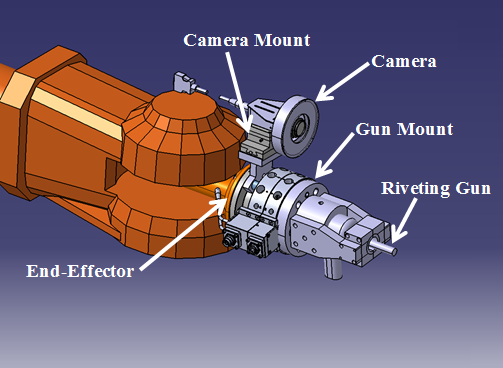
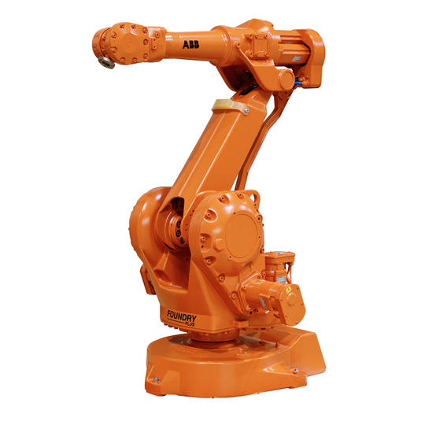
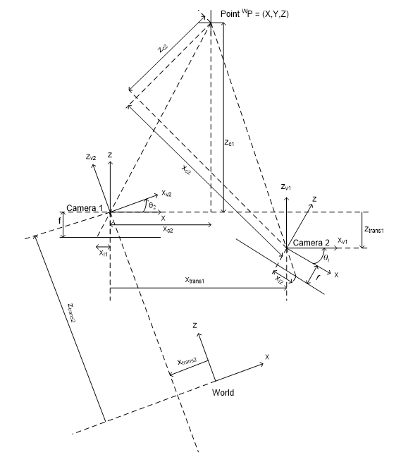
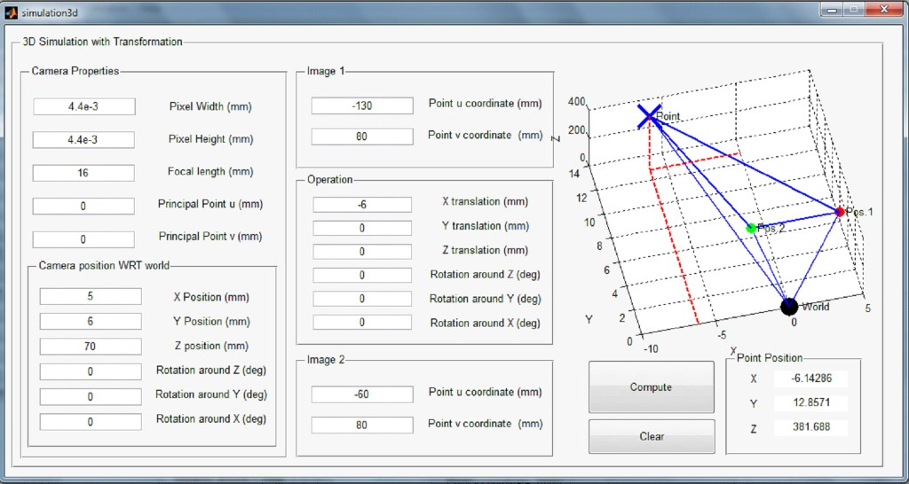
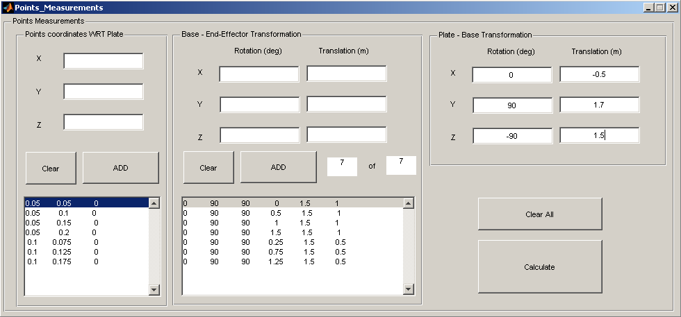
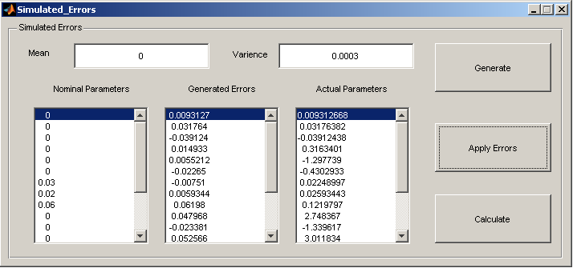

Robotic Tooling Self-Calibration
A novel systematic approach for calibrating industrial tools mounted on serial robotic manipulators, using self-calibration techniques and stereovision — eliminating the need for external measurement systems on the workshop floor.
Overview
At the end of my undergraduate career, I published an SAE conference paper on robotic tooling self-calibration. I proposed a new easy-to-use systematic approach for calibrating industrial tools mounted on a serial robotic manipulator. The method is based on the self-calibration approach which facilitates the calibration process on the workshop floor by ensuring no external measurement systems are needed. A simple jig with multiple precisely measured holes is used for the calibration process. An industrial vision system was used to determine the 3D position of mounted holes by implementing stereovision techniques. Multiple simulations were created using Matlab to demonstrate the effectiveness of the proposed method. A series of graphical user interfaces were carefully designed to facilitate the use of the simulations for multiple study cases.
Key Highlights
Self-Calibration
No external measurement systems needed — calibration happens directly on the workshop floor
Stereovision
Industrial vision system for 3D position determination of calibration points
Optimization
Mathematical optimization for calibration parameter estimation using linear and nonlinear formulations
Simulation & GUI
Custom Matlab GUIs for running simulations across multiple study cases
The Robotic System
The system uses an ABB industrial robot with a custom end-effector that integrates both a percussive riveting gun and a camera system for stereovision-based position measurement.


Stereovision & 3D Reconstruction
The calibration method uses two camera positions to triangulate the 3D coordinates of reference points on the calibration jig. The geometry of the stereo setup defines the coordinate transformations between camera, end-effector, and world frames.


Simulation Tools
Custom graphical user interfaces were built in Matlab to facilitate experimentation with different calibration scenarios, error injection, and parameter estimation across multiple study cases.


Publications
This work resulted in both a published SAE conference paper and a Master's thesis at Toronto Metropolitan University (formerly Ryerson University).